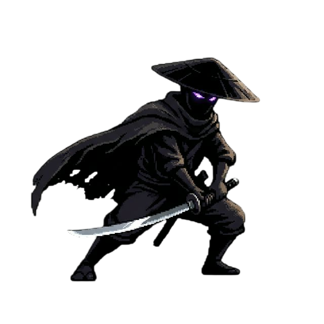

Uma odisseia de vingança em um Japão feudal reimaginado sob uma lente cyberpunk. Em Tsukuyomi, você controla Echo, um samurai sem mestre que desperta em uma Neo-Edo decadente, onde a tecnologia arcaica e o misticismo lunar se fundem em uma luta pela sobrevivência e verdade.
O coração do jogo é o sistema "Glitch Flow". Echo não apenas ataca; ele fragmenta a realidade. O combate é rítmico e cinético, onde cada golpe bem-sucedido permite breves distorções temporais, transformando encontros mortais em um balé de precisão e estilo ultra-veloz.
Inspirado na melancolia de ruas chuvosas e luzes de neon bruxuleantes de clássicos noir. Mesclamos a arquitetura de templos antigos com a poluição visual de uma metrópole industrial, criando um contraste vibrante entre o Magenta Neon, o Cyan Elétrico e o Obsidian profundo.
A história de Echo é contada através de "Ecos de Memória" espalhados pelo mundo. O jogador deve montar o quebra-cabeça de sua própria identidade enquanto enfrenta guardiões biomecânicos, em uma narrativa que recompensa a exploração e a atenção aos detalhes mínimos.
Nascido do desejo de criar uma experiência de "Flow" contínua. Nossa estratégia foca na maestria técnica. Projetado para speedruns, Tsukuyomi oferece camadas de profundidade mecânica que desafiam o jogador a atingir a perfeição em cada movimento sob o luar.
O protocolo Eventcore não termina aqui. Planejamos expansões que incluem novos "Glitches de Combate", um modo Boss Rush para testar os limites do seu Flow e a integração de desafios gerados pela comunidade, mantendo as sombras de Neo-Edo sempre vivas.
A velocidade frenética, a precisão do "um golpe, uma morte" e a estética neon-noir que dita o ritmo do nosso combate visceral.
A construção de mundo melancólica e atmosférica, além da sensação de mistério e desolação que permeia cada sombra de Neo-Edo.
A maestria do detalhamento gótico em pixel art e o senso de progressão épica através de um mapa interconectado e perigoso.
O mito de Tsukuyomi-no-Mikoto é a base de nossa lore. Exploramos a dualidade da lua como guia e como uma força de loucura e beleza oculta.
[ SINAL_PERDIDO // GAMEPLAY_PREVIEW ]